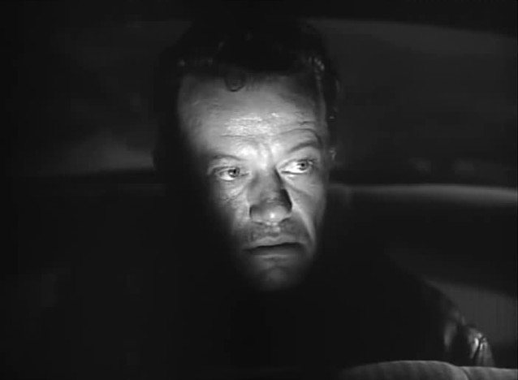

The Hitch-Hiker, frame at 7:12
Ida Lupino · 1953 · Film, black and white (frame)
Free to use
The story is taken from Billy Cook's killing spree of 1950. Posing as a hitchhiker, he took two men on a hunting trip hostage and forced them to drive him to Santa Rosalía in Mexico. Ida Lupino interviewed the two hostages and got releases from them and from Cook, who was executed at San Quentin on 12 December 1952. To satisfy the Hays Office she cut the number of deaths in the film to three.